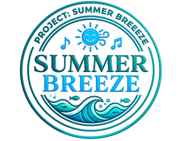

<!doctype html>
<html lang="ko">
<head>
  <meta charset="utf-8" />
  <meta name="viewport" content="width=device-width, initial-scale=1, viewport-fit=cover" />
  <title>SUMMER BREEZE — 우리가 함께 완성할 노래</title>
  <meta name="description" content="스크롤로 날아드는 여름 아이돌 육성 리듬게임, SUMMER BREEZE." />
  <link rel="preconnect" href="https://fonts.googleapis.com">
  <link rel="preconnect" href="https://fonts.gstatic.com" crossorigin>
  <link href="https://fonts.googleapis.com/css2?family=Jua&family=Gothic+A1:wght@400;500;700;900&display=swap" rel="stylesheet">
  <style>
    :root, .sw-root {
      --sw-bg: #0d1830;
      --sw-ink: #F5F5FF;
      --sw-ink-soft: #9fb2d6;
      --sw-accent: #4FD6E0;
      --sw-font-display: 'Jua', 'Gothic A1', sans-serif;
      --sw-font-body: 'Gothic A1', sans-serif;
    }
    * { box-sizing: border-box; }
    html { scroll-behavior: auto; }
    body { margin: 0; }

    /* ---- signature element: CRT scanline + holo sweep over the whole world ---- */
    .sb-scanlines {
      position: fixed; inset: 0; z-index: 15; pointer-events: none; mix-blend-mode: overlay;
      background: repeating-linear-gradient(
        to bottom,
        rgba(255,255,255,0.05) 0px,
        rgba(255,255,255,0.05) 1px,
        transparent 2px,
        transparent 3px
      );
      opacity: 0.55;
    }
    .sb-holosheen {
      position: fixed; inset: 0; z-index: 16; pointer-events: none; mix-blend-mode: soft-light;
      opacity: 0.5;
      background: linear-gradient(115deg,
        transparent 0%, transparent 42%,
        rgba(201,166,255,0.35) 48%,
        rgba(79,214,224,0.45) 51%,
        rgba(255,140,122,0.3) 54%,
        transparent 60%, transparent 100%);
      background-size: 220% 220%;
      animation: sb-sheen-move 9s ease-in-out infinite;
    }
    @keyframes sb-sheen-move {
      0%   { background-position: 100% 0%; }
      50%  { background-position: 0% 100%; }
      100% { background-position: 100% 0%; }
    }
    @media (prefers-reduced-motion: reduce) {
      .sb-holosheen { animation: none; }
    }

    /* brand mark — pixel heart, not the engine's default rounded blob */
    .sw-brand__mark {
      width: 34px; height: 34px; border-radius: 0 !important;
      background: none !important; box-shadow: none !important;
      display: grid; place-items: center;
    }
    .sw-brand__mark svg { display: block; width: 20px; height: 18px; }
    .sw-brand__name {
      font-family: var(--sw-font-display) !important;
      letter-spacing: .02em;
      background: linear-gradient(100deg, #F5F5FF 20%, #C9A6FF 45%, #4FD6E0 60%, #F5F5FF 80%);
      background-size: 260% auto;
      -webkit-background-clip: text; background-clip: text; color: transparent;
      animation: sb-brand-shimmer 6s linear infinite;
    }
    @keyframes sb-brand-shimmer { to { background-position: -260% 0; } }

    .sw-copy__title, .sw-copy__eyebrow { font-family: var(--sw-font-display) !important; }
    .sw-copy__title { letter-spacing: 0 !important; text-shadow: 0 2px 26px rgba(13,24,48,0.85) !important; }
    .sw-copy__num { font-family: 'Gothic A1', monospace !important; opacity: .7; }
    .sw-copy__body { text-shadow: 0 1px 16px rgba(13,24,48,0.9) !important; }

    .sw-copy__tags li {
      font-family: 'Gothic A1', sans-serif; font-weight: 700;
      background: color-mix(in srgb, var(--sw-accent) 20%, rgba(13,24,48,0.55)) !important;
      border: 1px solid color-mix(in srgb, var(--sw-accent) 45%, transparent) !important;
      color: #F5F5FF !important;
      backdrop-filter: blur(6px);
    }

    .sw-btn--primary {
      background: linear-gradient(120deg, #4FD6E0, #C9A6FF) !important;
      color: #0d1830 !important; font-weight: 900 !important;
    }
    .sw-btn--ghost { border-color: rgba(245,245,255,0.4) !important; color: #F5F5FF !important; }

    .sw-topcta {
      background: linear-gradient(120deg, #4FD6E0, #C9A6FF) !important;
      color: #0d1830 !important; font-weight: 900 !important;
    }

    .sw-nav__item.is-active { color: #0d1830 !important; }

    /* ---- floating HUD panel — used for both the Character member card and the
       Game setlist. Positioned fixed over the scene image (not stacked inside
       .sw-copy, whose vertically-centred, un-scrollable layout clips tall content),
       and its opacity/pointer-events are synced in JS to the matching section's
       .sw-copy so it fades in/out with the same rhythm as the rest of the copy. */
    .sb-hud {
      position: fixed;
      top: 50%;
      right: clamp(100px, 11vw, 170px);
      transform: translateY(-50%);
      width: min(320px, 28vw);
      max-height: 70vh;
      overflow-y: auto;
      z-index: 25;
      padding: 16px 18px 18px;
      border-radius: 14px;
      background: rgba(13,24,48,0.62);
      border: 1px solid rgba(245,245,255,0.18);
      backdrop-filter: blur(10px);
      opacity: 0;
      pointer-events: none;
    }
    .sb-hud::-webkit-scrollbar { width: 6px; }
    .sb-hud::-webkit-scrollbar-thumb { background: rgba(245,245,255,0.25); border-radius: 3px; }
    .sb-hud__label {
      display: block; font-family: var(--sw-font-display); font-weight: 700;
      font-size: .78rem; letter-spacing: .16em; text-transform: uppercase;
      color: var(--sw-accent); margin: 0 0 6px;
    }
    @media (max-width: 860px) {
      .sb-hud { display: none; } /* desktop-scope layout for now; mobile ships its own pass */
    }

    /* Game section: song list rendered as a pixel setlist instead of plain tags */
    .sb-setlist { list-style: none; margin: 0; padding: 0; display: flex; flex-direction: column; gap: 5px; }
    .sb-setlist li {
      display: flex; align-items: baseline; gap: 8px;
      font-family: 'Gothic A1', sans-serif; font-size: .9rem; color: #F5F5FF;
      padding: 7px 4px; border-bottom: 1px dashed rgba(245,245,255,0.18);
    }
    .sb-setlist li:last-child { border-bottom: 0; }
    .sb-setlist .n { font-family: var(--sw-font-display); color: var(--sw-accent); font-size: .78rem; width: 1.5em; flex: none; }
    .sb-setlist .mood { margin-left: auto; font-size: .7rem; color: var(--sw-ink-soft); letter-spacing: .03em; white-space: nowrap; }

    /* Game section: each song is clickable — plays its own mp3 */
    .sb-setlist li[data-src] {
      cursor: pointer; border-radius: 4px;
      transition: background .15s ease, padding-left .15s ease;
    }
    .sb-setlist li[data-src]:hover {
      background: color-mix(in srgb, var(--sw-accent) 12%, transparent);
      padding-left: 8px;
    }
    .sb-setlist li[data-src]:focus-visible { outline: 2px solid var(--sw-accent); outline-offset: 2px; }
    .sb-setlist .play { font-size: .64rem; color: var(--sw-ink-soft); width: 1.1em; text-align: center; flex: none; }
    .sb-setlist li.is-playing { color: var(--sw-accent); }
    .sb-setlist li.is-playing .n,
    .sb-setlist li.is-playing .play { color: var(--sw-accent); }

    /* How-to-Play: WASD chip cluster, a real structural device (it IS the control scheme) */
    .sb-wasd { display: grid; grid-template-columns: repeat(3, 40px); grid-template-rows: repeat(2, 40px); gap: 6px; margin-top: 24px; }
    .sb-wasd span {
      display: grid; place-items: center; border-radius: 8px;
      font-family: var(--sw-font-display); font-size: .95rem; color: #0d1830;
      background: color-mix(in srgb, var(--sw-accent) 70%, #F5F5FF);
      box-shadow: 0 3px 0 color-mix(in srgb, var(--sw-accent) 55%, #000);
    }
    .sb-wasd .w { grid-column: 2; grid-row: 1; }
    .sb-wasd .a { grid-column: 1; grid-row: 2; }
    .sb-wasd .s { grid-column: 2; grid-row: 2; }
    .sb-wasd .d { grid-column: 3; grid-row: 2; }

    /* Character section: the 5 name pills become buttons that drive the HUD card */
    .sw-copy__tags li.sb-member-btn {
      cursor: pointer;
      transition: transform .15s ease, background .15s ease, border-color .15s ease;
    }
    .sw-copy__tags li.sb-member-btn:hover { transform: translateY(-2px); }
    .sw-copy__tags li.sb-member-btn:focus-visible { outline: 2px solid var(--sw-accent); outline-offset: 2px; }
    .sw-copy__tags li.sb-member-btn.is-active {
      background: color-mix(in srgb, var(--member-accent, var(--sw-accent)) 40%, rgba(13,24,48,0.55)) !important;
      border-color: var(--member-accent, var(--sw-accent)) !important;
      color: #0d1830 !important;
      font-weight: 900;
    }

    .sb-member-card__top { display: flex; align-items: center; gap: 14px; }
    .sb-member-card__icon { width: 60px; height: 60px; flex: none; }
    .sb-member-card__icon svg, .sb-member-card__icon img { width: 100%; height: 100%; display: block; }
    .sb-member-card__name {
      font-family: var(--sw-font-display); font-size: 1.4rem; line-height: 1.1;
    }
    .sb-member-card__role {
      font-family: 'Gothic A1', sans-serif; font-size: .74rem; color: var(--sw-ink-soft); margin-top: 3px;
    }
    .sb-member-card__stats {
      display: grid; grid-template-columns: auto 1fr; gap: 5px 12px;
      margin: 14px 0 0; font-family: 'Gothic A1', sans-serif; font-size: .82rem;
    }
    .sb-member-card__stats dt { color: var(--sw-ink-soft); font-weight: 700; }
    .sb-member-card__stats dd { margin: 0; color: #F5F5FF; }
    .sb-member-card__debut {
      margin: 14px 0 0; padding-left: 12px; border-left: 3px solid var(--sw-accent);
      font-family: 'Gothic A1', sans-serif; font-weight: 700; font-style: italic;
      font-size: .84rem; line-height: 1.5; color: #F5F5FF;
    }

    :focus-visible { outline: 2px solid var(--sw-accent); outline-offset: 3px; }
  </style>
</head>
<body>
  <div id="top"></div>
  <div class="sb-scanlines" aria-hidden="true"></div>
  <div class="sb-holosheen" aria-hidden="true"></div>
  <div id="world"></div>
  <audio id="sb-audio" preload="none"></audio>

  <!-- Floating HUD panels — overlaid on the scene image itself, kept out of the
       vertically-centred .sw-copy text column so they can't get clipped by the
       viewport when their content runs tall. Faded in/out in sync with their
       matching section via setupHUDSync() below. -->
  <div class="sb-hud" id="sb-hud-character"></div>
  <div class="sb-hud" id="sb-hud-game"></div>

  <script src="scrub-engine.js"></script>
  <script>
    mountScrollWorld(document.getElementById('world'), {
      brand: { name: 'SUMMER BREEZE', href: '#top' },
      cta: { label: '지금 시작하기', href: '#howtoplay' },
      hint: '스크롤로 세계 속으로',
      nav: true,
      diveScroll: 1.35,
      connScroll: 0.85,
      sections: [
        {
          id: 'about', label: 'About',
          still: 'https://d8j0ntlcm91z4.cloudfront.net/user_3IAh7r0CkaIIfxp3ZToY5YPwNt0/hf_20260821_130303_7de2f63d-2c1e-4429-a4ce-b96c018abc13.png',
          clip: 'https://d2ol7oe51mr4n9.cloudfront.net/user_3IAh7r0CkaIIfxp3ZToY5YPwNt0/de0f2c9f-fbb4-4643-a2fd-be3257daa20d.mp4',
          accent: '#4FD6E0',
          linger: 0.3,
          eyebrow: 'WELCOME TO SUMMER BREEZE',
          title: '파란 하늘 아래, 우리가 함께 완성할 가장 찬란한 노래',
          body: '완벽한 박자가 맞물릴 때마다 아이돌은 조금씩 더 높이 도약합니다. 라운드를 거쳐 짙어지는 푸른빛처럼, 당신의 리듬으로 완성될 단 하나의 아이돌 그룹을 만나보세요.',
          tags: ['육성형 리듬게임', '시즌마다 새로운 그룹'],
        },
        {
          id: 'character', label: 'Character',
          still: 'https://d8j0ntlcm91z4.cloudfront.net/user_3IAh7r0CkaIIfxp3ZToY5YPwNt0/hf_20260821_133122_ecab59ad-94d4-46b9-8103-0a72cf48c5fa.png',
          clip: 'https://d2ol7oe51mr4n9.cloudfront.net/user_3IAh7r0CkaIIfxp3ZToY5YPwNt0/30835ea1-94a1-4a57-ae03-9c22951a7404.mp4',
          accent: '#FF8C7A',
          linger: 0.4,
          eyebrow: 'MEET THE GROUP',
          title: '다섯 개의 색, 하나의 무대',
          body: '완벽하게 다른 다섯 명의 궤도가 겹쳐질 때, 비로소 완성되는 하나의 팀. 라운드를 클리어할 때마다 이들의 이야기도 함께 자라납니다.',
          tags: ['채이', '도희', '나리', '시월', '새벽'],
        },
        {
          id: 'game', label: 'Game',
          still: 'https://d8j0ntlcm91z4.cloudfront.net/user_3IAh7r0CkaIIfxp3ZToY5YPwNt0/hf_20260821_130159_002b680f-2ddd-4c0b-a1c2-e355cf5acf7a.png',
          clip: 'https://d2ol7oe51mr4n9.cloudfront.net/user_3IAh7r0CkaIIfxp3ZToY5YPwNt0/19ffd83a-c757-458d-85b7-b7496b202e93.mp4',
          accent: '#FFE9A8',
          linger: 0.35,
          eyebrow: 'PLAY THE STAGE',
          title: '리듬으로 완성하는 라이브 무대',
          body: '하트 스테이지 위에서, 다섯 곡의 서로 다른 무드를 리듬으로 연주하며 그룹의 성장 포인트를 쌓아 올리세요.',
        },
        {
          id: 'howtoplay', label: 'How to Play',
          still: 'https://d8j0ntlcm91z4.cloudfront.net/user_3IAh7r0CkaIIfxp3ZToY5YPwNt0/hf_20260821_130536_366c8055-b8fa-4a9f-9644-48da95bbe302.png',
          clip: 'https://d2ol7oe51mr4n9.cloudfront.net/user_3IAh7r0CkaIIfxp3ZToY5YPwNt0/bb88294f-2c41-4594-a93d-820b0fb51171.mp4',
          accent: '#C9A6FF',
          linger: 0.3,
          eyebrow: 'HOW TO PLAY',
          title: '네 방향에서 쏟아지는 리듬을 놓치지 마세요',
          body: '위에서 오는 노트는 W, 아래에서 오는 노트는 S, 왼쪽은 A, 오른쪽은 D. 네온 노트 길을 따라 정확한 타이밍으로 그룹의 무대를 완성해보세요.',
          cta: { primary: { label: '지금 시작하기', href: '#' } },
        },
      ],
      connectors: [
        'https://d2ol7oe51mr4n9.cloudfront.net/user_3IAh7r0CkaIIfxp3ZToY5YPwNt0/0600126d-38f5-4dfb-91a8-a03650dec8b1.mp4',
        'https://d2ol7oe51mr4n9.cloudfront.net/user_3IAh7r0CkaIIfxp3ZToY5YPwNt0/6d0884d6-9a29-451b-bc74-dea109e7b936.mp4',
        'https://d2ol7oe51mr4n9.cloudfront.net/user_3IAh7r0CkaIIfxp3ZToY5YPwNt0/8a948dbe-f3af-4fc6-841b-e8cea1317454.mp4',
      ],
    });

    // Brand mark — the user's own SUMMER BREEZE logo artwork (logo.png),
    // swapped in for the engine's default rounded-blob mark.
    (function drawBrandMark() {
      var host = document.querySelector('.sw-brand__mark');
      if (!host) return;
      host.innerHTML = '';
    })();

    // The engine renders `title`/`body` as escaped text (by design, to stay safe
    // with arbitrary config), so manual line breaks are applied in a post-mount
    // pass rather than forced through the config strings. About's body is left
    // out of this list on purpose — reverted to the engine's plain, unbroken text
    // per feedback. The WASD cluster (small, 2 rows) stays inline after How to
    // Play's body; the Character/Game HUD panels live outside this flow entirely
    // (see setupMemberPanel / setupSetlistAudio) so they can't get clipped by the
    // viewport the way they did when they were stacked into this same column.
    (function attachRichBlocks() {
      var titleHTML = [
        '파란 하늘 아래,<br>우리가 함께 완성할<br>가장 찬란한 노래',
        '다섯 개의 색,<br>하나의 무대',
        '리듬으로 완성하는<br>라이브 무대',
        '네 방향에서 쏟아지는<br>리듬을 놓치지 마세요',
      ];
      var bodyHTML = [
        null,
        '완벽하게 다른 다섯 명의 궤도가 겹쳐질 때,<br>비로소 완성되는 하나의 팀.<br>라운드를 클리어할 때마다<br>이들의 이야기도 함께 자라납니다.',
        '하트 스테이지 위에서, 다섯 곡의 서로 다른 무드를<br>리듬으로 연주하며 그룹의 성장 포인트를<br>쌓아 올리세요.',
        '위에서 오는 노트는 W, 아래에서 오는 노트는 S,<br>왼쪽은 A, 오른쪽은 D. 네온 노트 길을 따라 정확한<br>타이밍으로 그룹의 무대를 완성해보세요.',
      ];
      var configExtras = [
        null,
        null,
        null,
        '<div class="sb-wasd" aria-hidden="true"><span class="w">W</span><span class="a">A</span><span class="s">S</span><span class="d">D</span></div>',
      ];
      var copies = document.querySelectorAll('.sw-copy');
      copies.forEach(function (c, i) {
        var t = c.querySelector('.sw-copy__title');
        var b = c.querySelector('.sw-copy__body');
        if (t && titleHTML[i]) t.innerHTML = titleHTML[i];
        if (b && bodyHTML[i]) b.innerHTML = bodyHTML[i];

        var html = configExtras[i];
        if (!html) return;
        var anchor = c.querySelector('.sw-copy__tags') || c.querySelector('.sw-copy__body') || c;
        var host = document.createElement('div');
        host.innerHTML = html;
        anchor.after(host.firstChild);
      });
    })();

    // Keep the two floating HUD panels' visibility in lockstep with their
    // matching section's own .sw-copy fade (the engine recomputes that opacity/
    // pointer-events every scroll frame; we just mirror it onto our panels,
    // which live outside .sw-copylayer so they can float over the scene image).
    (function setupHUDSync() {
      var copies = document.querySelectorAll('.sw-copy');
      var charCopy = copies[1], gameCopy = copies[2];
      var hudChar = document.getElementById('sb-hud-character');
      var hudGame = document.getElementById('sb-hud-game');
      function sync(hud, copy) {
        if (!hud || !copy) return;
        hud.style.opacity = copy.style.opacity || 0;
        hud.style.pointerEvents = copy.style.pointerEvents || 'none';
      }
      function loop() {
        sync(hudChar, charCopy);
        sync(hudGame, gameCopy);
        requestAnimationFrame(loop);
      }
      loop();
    })();

    // Game section: click a song in the setlist to play its mp3. Clicking the
    // currently-playing song again pauses it; clicking another switches tracks.
    // The setlist now lives in the floating #sb-hud-game panel (see above) so a
    // 5-song list can never get clipped by the vertically-centred copy column.
    (function setupSetlistAudio() {
      var hud = document.getElementById('sb-hud-game');
      if (!hud) return;
      hud.innerHTML =
        '<span class="sb-hud__label">SETLIST</span>' +
        '<ol class="sb-setlist">' +
          '<li data-src="audio/blue_horizon.mp3" role="button" tabindex="0"><span class="n">01</span><span class="t">Blue Horizon</span><span class="mood">잔잔하고 조용한</span><span class="play" aria-hidden="true">▶</span></li>' +
          '<li data-src="audio/first_wave.mp3" role="button" tabindex="0"><span class="n">02</span><span class="t">First Wave</span><span class="mood">격렬하고 강렬한</span><span class="play" aria-hidden="true">▶</span></li>' +
          '<li data-src="audio/shining_stage.mp3" role="button" tabindex="0"><span class="n">03</span><span class="t">Shining Stage</span><span class="mood">첫 데뷔, 상큼한</span><span class="play" aria-hidden="true">▶</span></li>' +
          '<li data-src="audio/summer_breeze.mp3" role="button" tabindex="0"><span class="n">04</span><span class="t">Summer Breeze</span><span class="mood">가장 청량한 메인 테마</span><span class="play" aria-hidden="true">▶</span></li>' +
          '<li data-src="audio/summer_light.mp3" role="button" tabindex="0"><span class="n">05</span><span class="t">Summer Light</span><span class="mood">여름밤, 선선하고 잔잔한</span><span class="play" aria-hidden="true">▶</span></li>' +
        '</ol>';

      var audioEl = document.getElementById('sb-audio');
      var items = hud.querySelectorAll('.sb-setlist li[data-src]');
      if (!audioEl || !items.length) return;
      var current = null;
      function stopAll() {
        items.forEach(function (li) {
          li.classList.remove('is-playing');
          var p = li.querySelector('.play');
          if (p) p.textContent = '▶';
        });
      }
      function playItem(li) {
        if (current === li && !audioEl.paused) {
          audioEl.pause();
          stopAll();
          current = null;
          return;
        }
        stopAll();
        audioEl.src = li.getAttribute('data-src');
        audioEl.currentTime = 0;
        audioEl.play().catch(function () {});
        li.classList.add('is-playing');
        var p = li.querySelector('.play');
        if (p) p.textContent = '❚❚';
        current = li;
      }
      items.forEach(function (li) {
        li.addEventListener('click', function () { playItem(li); });
        li.addEventListener('keydown', function (e) {
          if (e.key === 'Enter' || e.key === ' ') { e.preventDefault(); playItem(li); }
        });
      });
      audioEl.addEventListener('ended', function () { stopAll(); current = null; });
    })();

    // Character section: the 5 name-only pills become buttons. Clicking one
    // features that member in the floating #sb-hud-character panel — name, age,
    // ability, MBTI, likes/dislikes, nationality, a one-line debut story, and
    // their symbol animal rendered in the same voxel technique as the brand
    // mark. Moved out of the in-text flow (and off the "animal in the pill
    // label" format) per feedback — the pill now just names the member, and the
    // full reveal floats over the scene image instead of stacking under the copy.
    (function setupMemberPanel() {
      var MEMBERS = [
        {
          name: '채이', animal: '여우', age: 23, role: '비주얼 · 메인래퍼', mbti: 'ESTP',
          likes: '번지점프', dislikes: '조용한 분위기, 매운 떡볶이', nation: '태국',
          debut: '유복한 환경에서 어릴 때부터 아이돌을 꿈꾸다, 한국 오디션에 합격해 데뷔했다.',
          from: '#FF8C7A', to: '#FFE9A8', icon: 'icons/fox.png',
        },
        {
          name: '도희', animal: '검정 고양이', age: 21, role: '리드래퍼 (로우톤)', mbti: 'ISTP',
          likes: '애니메이션', dislikes: '웨이팅', nation: '한국',
          debut: '아르바이트를 하던 중 캐스팅되어, 짧은 연습생 기간을 거쳐 곧바로 데뷔했다.',
          from: '#1B2A4A', to: '#C9A6FF', icon: 'icons/black_cat.png',
        },
        {
          name: '나리', animal: '강아지', age: 22, role: '리더 · 메인보컬', mbti: 'ENFJ',
          likes: '나베 요리', dislikes: '차가운 눈빛', nation: '일본 (한일 혼혈)',
          debut: '도쿄에서 지내다 한국으로 건너와, 긴 연습생 생활 끝에 데뷔했다.',
          from: '#FFE9A8', to: '#FF8C7A', icon: 'icons/dog.png',
        },
        {
          name: '시월', animal: '뱁새', age: 18, role: '예능치트키 · 서브보컬 + 메인댄서', mbti: 'ESFJ',
          likes: '키링 · 인형 수집', dislikes: '병원', nation: '한국',
          debut: '고등학생 때 친구 새벽과 함께 오디션에 합격해 나란히 데뷔했다.',
          from: '#4FD6E0', to: '#F5F5FF', icon: 'icons/bapsae.png',
        },
        {
          name: '새벽', animal: '토끼', age: 18, role: '퍼포먼스 디렉터 · 리드댄서', mbti: 'ISFP',
          likes: '잠', dislikes: '딱딱한 침대', nation: '한국',
          debut: '고등학생 때 친구 시월과 함께 오디션에 합격해 나란히 데뷔했다.',
          from: '#C9A6FF', to: '#F5F5FF', icon: 'icons/rabbit.png',
        },
      ];

      // Left-to-right position of each member's HUD card, as a % of viewport
      // width — measured directly off screenshots of the actual group still
      // (채이 27.8% / 도희 39.2% / 나리 50.9% / 시월 61.2% / 새벽 71.5% center-x),
      // then offset a bit right of each member's own position so the card
      // opens beside her rather than centered on/over her face. NOTE: the
      // scene is a camera-dive video, not a static photo, so this only lines
      // the card up with where that member stands at the shot's widest/
      // settled framing — it can't track her through the whole scroll
      // animation. If the left-to-right order here doesn't match the actual
      // lineup, this is the array to reorder.
      var HUD_LEFT_PCT = [34, 45, 57, 67, 77];

      function renderMember(i) {
        var m = MEMBERS[i];
        var card = document.getElementById('sb-hud-character');
        if (!m || !card) return;
        card.style.right = 'auto';
        card.style.left = (HUD_LEFT_PCT[i] != null ? HUD_LEFT_PCT[i] : 60) + '%';
        var icon = '';
        card.innerHTML =
          '<div class="sb-member-card__top">' +
            '<div class="sb-member-card__icon">' + icon + '</div>' +
            '<div>' +
              '<div class="sb-member-card__name" style="background:linear-gradient(100deg,' + m.from + ',' + m.to + ');-webkit-background-clip:text;background-clip:text;color:transparent;">' + m.name + '</div>' +
              '<div class="sb-member-card__role">' + m.role + ' · 상징 동물 ' + m.animal + '</div>' +
            '</div>' +
          '</div>' +
          '<dl class="sb-member-card__stats">' +
            '<dt>나이</dt><dd>' + m.age + '세</dd>' +
            '<dt>능력</dt><dd>' + m.role + '</dd>' +
            '<dt>MBTI</dt><dd>' + m.mbti + '</dd>' +
            '<dt>좋아하는 것</dt><dd>' + m.likes + '</dd>' +
            '<dt>싫어하는 것</dt><dd>' + m.dislikes + '</dd>' +
            '<dt>국적</dt><dd>' + m.nation + '</dd>' +
          '</dl>' +
          '<p class="sb-member-card__debut" style="border-color:' + m.from + ';">' + m.debut + '</p>';
      }

      var copies = document.querySelectorAll('.sw-copy');
      var charCopy = copies[1];
      var tagList = charCopy && charCopy.querySelector('.sw-copy__tags');
      if (!tagList) return;
      var items = tagList.querySelectorAll('li');
      var current = null;
      var hudCard = document.getElementById('sb-hud-character');

      // Closed by default (no card on landing in the section). Clicking a
      // name opens her card; clicking that same name again closes it.
      // Clicking a different name while one is open just switches to her.
      function closeCard() {
        items.forEach(function (el) { el.classList.remove('is-active'); });
        if (hudCard) { hudCard.style.display = 'none'; hudCard.innerHTML = ''; }
        current = null;
      }
      function selectMember(i) {
        if (current === i) { closeCard(); return; }
        items.forEach(function (el, idx) { el.classList.toggle('is-active', idx === i); });
        if (hudCard) hudCard.style.display = '';
        renderMember(i);
        current = i;
      }
      items.forEach(function (li, i) {
        li.classList.add('sb-member-btn');
        if (MEMBERS[i]) li.style.setProperty('--member-accent', MEMBERS[i].from);
        li.setAttribute('role', 'button');
        li.setAttribute('tabindex', '0');
        li.addEventListener('click', function () { selectMember(i); });
        li.addEventListener('keydown', function (e) {
          if (e.key === 'Enter' || e.key === ' ') { e.preventDefault(); selectMember(i); }
        });
      });
      closeCard();
    })();
  </script>
</body>
</html>
